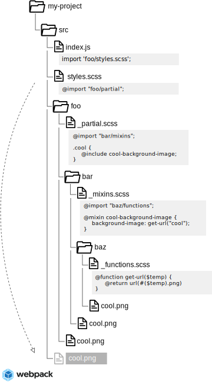

The resolve-url-loader is typically used where SASS source files are transpiled to CSS. CSS being a format that webpack can readily ingest. So let’s look at a basic example where the structure is basically CSS but is composed using SASS features.
Working backwards, this is the final CSS we are after. Just a single rule with a single declaration.
.cool {
background-image: url(cool.png);
}
When using SASS it’s common for rules to come from different partials, and for declarations to be composed using mixins and functions. Consider this more complicated project with imported files.

All the subdirectories here contributed something to the rule, so we could reasonably place the asset in any of them. And any of these locations might be the “correct” to our way of thinking.
There could actually be a separate cool.png in each of the subdirectories! 🤯 In that case, which one gets used?
The answer: none. 😞 Webpack expects asset paths to be relative to the root SASS file src/styles.scss. So for the CSS url(cool.png) it will look for src/cool.png which is not present. 💥
All our assets are in subdirecties src/foo/cool.png or src/foo/bar/cool.png or src/foo/bar/baz/cool.png. We need to re-write the url() to point to the one we intend. But right now that’s pretty ambiguous.
Worse still, Webpack doesn’t know any of these nested SCSS files were part of the SASS composition. Meaing it doesn’t know there are nested directories in the first place. How do we rewite to something we don’t know about?
The problem: How to identify contributing directectories and look for the asset in those directories in some well-defined priority order?
The crux: How to identify what contributed to the SASS compilation, internally and post factum, but from within Webpack? 😫
Sourcemaps! 😃
Wait, don’t run away! Sourcemaps might sound scary, but they solve our problem reasonably well. 👍
The SASS compiler source-map can tell us which original SCSS file contributed each character in the resulting CSS.
The SASS source-map is also something we can access from within Webpack.
Continuing with the example let’s compile SASS on the command line. You can do this several different ways but I prefer npx.
> npx node-sass src/styles.scss --output . --output-style expanded --source-map true
Using the experimental sourcemap-to-string package (also in this repository) we can visualise the SASS source on the left vs the output CSS on the right.
src/styles.scss
-------------------------------------------------------------------------------
src/foo/_partial.scss
-------------------------------------------------------------------------------
3:01 .cool░░░░░░░░░░░░░░░░░░░░░░░░░░░░░ 1:01 .cool░░░░░░░░░░░░░░░░░░░░░░░░░░░░░
3:06 ░░░░░ ░░░░░░░░░░░░░░░░░░░░░░░░░░░░ 1:06 ░░░░░ ░░░░░░░░░░░░░░░░░░░░░░░░░░░░
3:07 ░░░░░░{⏎ 1:07 ░░░░░░{⏎
@include cool-background-image;⏎ ░░░░░░░░░░░░░░░░░░░░░░░░░░░░░░░░
}░░░░░░░░░░░░░░░░░░░░░░░░░░░░░░░░░ ░░░░░░░░░░░░░░░░░░░░░░░░░░░░░░░░░░
-:-- ░░░░░░░░░░░░░░░░░░░░░░░░░░░░░░░░░░ 3:02 ░⏎
░░░░░░░░░░░░░░░░░░░░░░░░░░░░░░░░░░ ⏎
░░░░░░░░░░░░░░░░░░░░░░░░░░░░░░░░░░ /*# sourceMappingURL=styles.css.ma
░░░░░░░░░░░░░░░░░░░░░░░░░░░░░░░░░░ p */░░░░░░░░░░░░░░░░░░░░░░░░░░░░░░
src/foo/bar/_mixins.scss
-------------------------------------------------------------------------------
4:03 ░░background-image░░░░░░░░░░░░░░░░ 2:03 ░░background-image░░░░░░░░░░░░░░░░
4:19 ░░░░░░░░░░░░░░░░░░: get-url("cool" 2:19 ░░░░░░░░░░░░░░░░░░: ░░░░░░░░░░░░░░
);⏎ ░░░░░░░░░░░░░░░░░░░░░░░░░░░░░░░░░░
}⏎ ░░░░░░░░░░░░░░░░░░░░░░░░░░░░░░░░░░
src/foo/bar/baz/_functions.scss
-------------------------------------------------------------------------------
2:11 ░░░░░░░░░░url(#░░░░░░░░░░░░░░░░░░░ 2:21 ░░░░░░░░░░░░░░░░░░░░url(cool.png)░
2:16 ░░░░░░░░░░░░░░░{$temp}.png);⏎ 2:34 ░░░░░░░░░░░░░░░░░░░░░░░░░░░░░░░░░;
}░░░░░░░░░░░░░░░░░░░░░░░░░░░░░░░░░ ⏎
░░░░░░░░░░░░░░░░░░░░░░░░░░░░░░░░░░ }░░░░░░░░░░░░░░░░░░░░░░░░░░░░░░░░░
As expected, the pure CSS portions are essentially the same in the source and the output.
Meanwhile the indirect @mixin and funtion substitutes values into the output. But we can still clearly see where in the source that final value originated from.
Now we know the original SCSS sources we can use a CSS parser such as postcss to process all the declaration values that contain url() and rewrite any file paths we find there.
For our example, this algorithm will always give us the asset located in the baz subdirectory. Clearly evaluating the source-map at just one location is not enough. Any of the directories that contributed source files to the rule-set might be considered the “correct” place to store the asset and all these files contributed different parts of the rule-set, not just the declaration value.
We stop short of evaluating the source-map for every characer in the rule-set and instead we chose a small number of meaningful points.
| label | sampling location | in the example | implies asset | |
|---|---|---|---|---|
| 1 | subString | start of argument to the url() |
c in cool.png |
src/foo/bar/baz/cool.png |
| 2 | value | start of value in the declaration | u in url(...) |
src/foo/bar/baz/cool.png |
| 3 | property | start of property in the declaration | b in background-image |
src/foo/bar/cool.png |
| 4 | selector | start of selector in the rule-set | . in .selector |
src/foo/cool.png |
These locations are tested in order. If an asset of the correct filename is found then we break and use that result.
Note it is a quirk of the example that the value and subString locations imply the same file. In a more complex example this may not be true.
If necessary the order can be customised or a custom file search (starting at each location) be implemented. Refer to the advanced features.
To operate on the sass-loader output, both CSS and source-map, we introduce resolve-url-loader containing the algorithm above.
The resolve-url-loader rewrites asset paths found in url() notation using the postcss parser.
This webpack configuration outlines some important points.
rules: [
{
test: /\.scss$/,
use: [
{
loader: 'css-loader' // <-- assets are identified here
}, {
loader: 'resolve-url-loader' // <-- receives CSS and source-map from SASS compile
}, {
loader: 'sass-loader',
options: {
sourceMap: true, // <-- IMPORTANT!
sourceMapContents: false
}
}
],
},
...
{
test: /\.png$/, // <-- assets needs their own loader configuration
use: [ ... ]
}
]
Its essential to explicitly configure the sass-loader for sourceMap: true. That way we definitely get a sourcemap from upstream SASS loader all the time, not just in developement mode or where devtool is used.
Once the CSS reaches the css-loader webpack becomes aware of each of the asset files and will try to separately load and process them. You will need more Webpack configuration to make that work. Refer to the troubleshooting docs before raising an issue.
The implementation here is limited to the webpack loader but it’s plausible the algorithm could be realised as a postcss plugin in isolation using the root.input.map property to access the incomming source-map.
As a separate plugin it could be combined with other plugins in a single postcss-loader step. Processing multiple plugins together in this way without reparsing would arguably be more efficient.
However as a Webpack loader we have full access to the loader API and the virtual file-system. This means maximum compatibility with webpack-dev-server and the rest of the Webpack ecosystem.